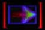
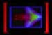
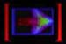

Welcome to our third issue of Switch. Several things have changed with
each issue and this one is no different. We have experimented with how Switch
looks on your screen and the way you navigate through the articles in short,
single-screen pages. Give us your feedback and comments by emailing us at
70451.1665@compuserve.com. This is also my last issue as editor -- please
welcome Loretta L. Lange as our new editor.
With the question of artificial life, we faced several challenges. Since
most of us work as image-based artists, we wanted to clarify what artificial
life was, how it differs from artificial intelligence, and how it frames
art in a different light. Rudy Rucker's article describes
some of the simplest forms of artificial
life: small self-modulating algorithms that leave trails of colored
pixels on a computer screen (cellular automata). Using the word "life"
for these graphic traces tugs at our sense of credibility, especially since
they appear similar to many screen-savers which are, as we all know, just
programs.
